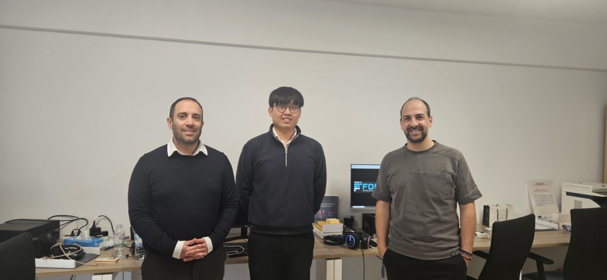

Secondment

We are pleased to share that Wai Phone is undertaking a secondment as part of MSCA AeroNet programme at the University of Athens. His works include safe third party interactation to the 5G core using OpenCAPIF and testing it using a video server which can change the QOS flow to the 5G core if the user wants a high-resolution video.
← Back to News